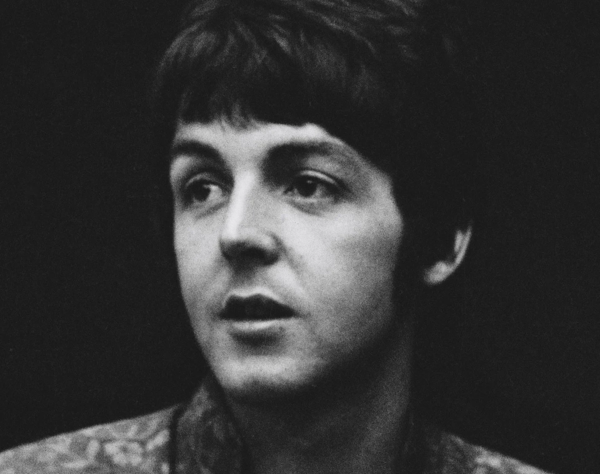

Abbey Road
Abbey Road is the eleventh studio album by the English rock band the Beatles, released on 26 September 1969, by Apple Records. It is the last album the group recorded,[2] although Let It Be (1970) was the last album completed before the band's break-up in April 1970.[3] It was mostly recorded in April, July, and August 1969, and topped the record charts in both the United States and the United Kingdom. A double A-side single from the album, "Something" / "Come Together", was released in October, which also topped the charts in the US.
Abbey Road incorporates styles such as rock, pop, blues, and progressive rock,[4] and makes prominent use of the Moog synthesiser and guitar played through a Leslie speaker unit. It is also notable for having a long medley of songs on side two that have subsequently been covered as one suite by other notable artists. The album was recorded in a more collegial atmosphere than the Get Back / Let It Be sessions earlier in the year, but there were still significant confrontations within the band, particularly over Paul McCartney's song "Maxwell's Silver Hammer", and John Lennon did not perform on several tracks. By the time the album was released, Lennon had left the group, though this was not publicly announced until McCartney also quit the following year.

